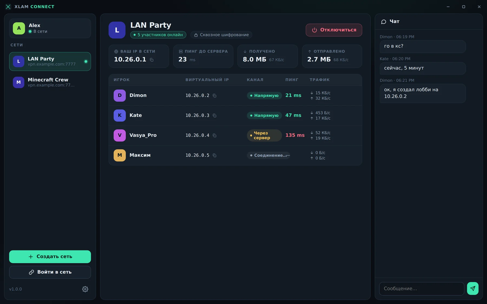
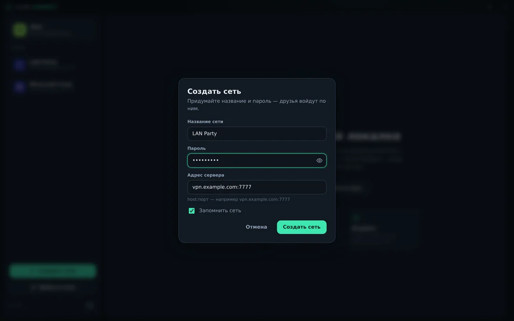
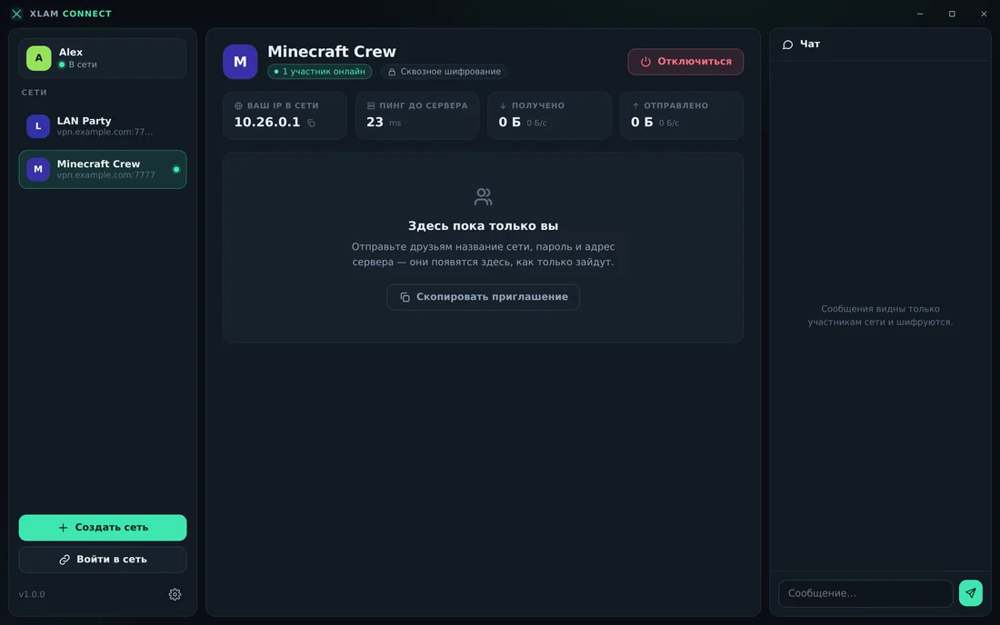
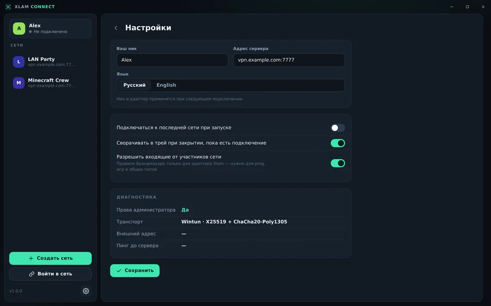

Xlam Connect объединяет компьютеры друзей в приватную виртуальную сеть: прямые P2P-соединения, сквозное шифрование и свои IP-адреса. LAN-игры, общие папки, удалённый доступ и чат.

Скриншоты сделаны в демо-режиме: игроки, пинги и сообщения вымышлены.
Идея знакомая по Hamachi и Radmin VPN, но сервер ваш: вы сами решаете, где живёт ваша сеть.
Пробой NAT напрямую между игроками — минимальная задержка. Если не получилось, трафик идёт через сервер и сам «апгрейдится» до прямого.
X25519 + ChaCha20-Poly1305. Ключи зависят от пароля сети, которого нет у сервера, поэтому содержимое трафика он прочитать не может.
Каждый получает постоянный адрес вида 10.26.x.x. Подключайтесь друг к другу по IP, как в настоящей локальной сети.
Broadcast- и multicast-пакеты рассылаются всем в комнате, поэтому игры находят лобби так же, как в локалке.
Общайтесь прямо в приложении: сообщения видны только участникам сети и шифруются так же, как и весь трафик.
Защита от повторов пакетов и подмены IP-источника, правило брандмауэра только для адаптера Xlam (отключается в настройках), авто-переподключение при обрыве.
Придумайте название и пароль, укажите адрес сервера host:7777.
Кнопка «Скопировать приглашение» собирает название, пароль и адрес сервера в одно сообщение.
Друзья нажимают «Войти в сеть» и появляются в списке с IP, пингом и типом канала. Дальше — как в локалке.
Тёмная тема, русский и английский языки. При закрытии окна приложение остаётся в трее, пока есть подключение; автоподключение к последней сети включается в настройках.



Portable-версия не требует установки. При запуске попросит права администратора — они нужны, чтобы создать виртуальный адаптер.
Да. Сервер координации знакомит игроков и выдаёт адреса, но сам трафик прочитать не может. Подойдёт любой недорогой VPS с белым IP или домашний ПК с пробросом порта 7777 (TCP и UDP).
Клиент работает на Windows x64 и использует драйвер Wintun. Поддерживается только IPv4.
При строгом (симметричном) NAT трафик идёт через сервер, скорость в этом случае ограничена его каналом. Как только пробой удаётся, соединение переключается на прямое автоматически.
Содержимое трафика и чата он прочитать не может: оно шифруется между игроками ключами, зависящими от пароля сети. Сам пароль сервер не хранит, только производное значение для проверки входа. Но метаданные он знает: названия сетей, ники, виртуальные и внешние IP участников, время входа и объём трафика через relay.